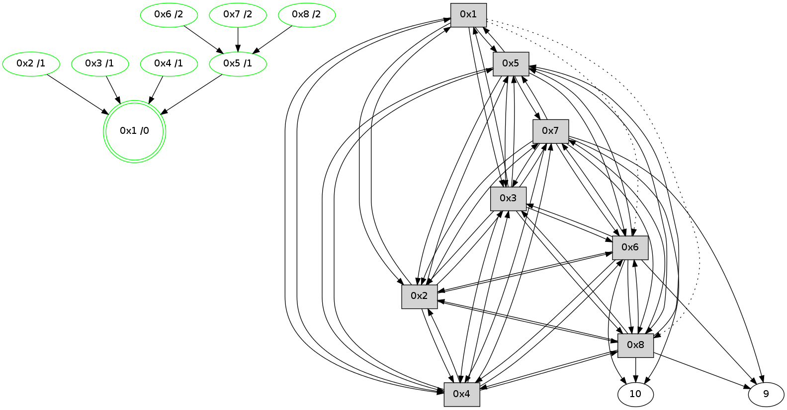

>> << IDX [start] -100 -25 -5 +0 [530.053860903]
 Previous packets
----------------------------------------------------------------------
525.496023 beacon01(11f6) #0 coord=01,02,03,04,05,06,07,08,0a,09 cycle=1008.0ms assoc
-- color-indic=0 64 53 85
525.506198 beacon02(11f6) #0 coord=01,02,03,04,05,06,07,08,0a,09 cycle=1008.0ms assoc 64 c0 b4
525.516158 beacon03(11f6) #0 coord=01,02,03,04,05,06,07,08,0a,09 cycle=1008.0ms assoc 64 ba f9
525.526158 beacon04(11f6) #0 coord=01,02,03,04,05,06,07,08,0a,09 cycle=1008.0ms assoc 64 cd 13
525.536160 beacon05(11f6) #0 coord=01,02,03,04,05,06,07,08,0a,09 cycle=1008.0ms assoc 64 b7 5e
525.546161 beacon06(11f6) #0 coord=01,02,03,04,05,06,07,08,0a,09 cycle=1008.0ms assoc 64 39 89
525.556160 beacon07(11f6) #0 coord=01,02,03,04,05,06,07,08,0a,09 cycle=1008.0ms assoc 64 43 c4
525.566165 beacon08(11f6) #0 coord=01,02,03,04,05,06,07,08,0a,09 cycle=1008.0ms assoc 64 c6 55
525.600766 [Hello(7): seq=261 sym=10,5,6,8,3,2,4,9 color=2 sysInfo=hasWarning,MaxColorIndicationCalled,ColoringModeIndicationCalled,MaxColorResponseCalled stat=10:3,10,2,8/5:10,0,8,2/6:14,1,6,12/8:8,1,5,3/3:15,15,5,12/2:1,15,3,11/4:9,15,11,10/9:15,0,5,3]
525.626365 [Hello(2): seq=261 sym=1,7,5,3,8,4,6 color=4 sysInfo=hasWarning,MaxColorIndicationCalled,ColoringModeIndicationCalled,MaxColorResponseCalled stat=1:4,1,10,0/7:1,14,7,10/5:4,1,8,2/3:6,0,6,11/8:4,0,3,2/4:5,15,6,13/6:10,1,6,12]
525.635016 [Hello(3): seq=261 sym=1,2,7,5,6,8,4 color=5 sysInfo=hasWarning,MaxColorIndicationCalled,ColoringModeIndicationCalled,MaxColorResponseCalled stat=1:5,1,10,0/2:9,0,6,14/7:3,14,7,9/5:2,1,4,2/6:15,1,7,12/8:4,0,3,2/4:10,0,7,13]
525.693739 [Hello(4): seq=261 sym=1,2,5,6,3,8,7 color=6 sysInfo=MaxColorIndicationCalled,ColoringModeIndicationCalled,MaxColorResponseCalled stat=1:4,0,11,0/2:9,1,8,13/5:11,14,8,2/6:1,0,7,12/3:13,0,6,11/8:5,0,2,2/7:5,14,7,10]
525.719674 [Hello(6): seq=261 sym=10,7,5,3,8,4,2,9 color=7 sysInfo=hasWarning,MaxColorIndicationCalled,ColoringModeIndicationCalled,MaxColorResponseCalled stat=10:14,10,15,7/7:0,15,7,10/5:1,14,8,2/3:11,0,5,13/8:7,1,4,3/4:9,0,0,12/2:3,15,3,11/9:1,14,3,3]
525.724625 [Hello(5): seq=261 sym=1,2,7,6,3,8,4 color=1 sysInfo=hasWarning,MaxColorIndicationCalled,ColoringModeIndicationCalled,MaxColorResponseCalled stat=1:5,0,10,0/2:9,1,7,13/7:6,14,7,10/6:4,1,6,12/3:11,0,8,12/8:5,15,3,2/4:10,1,5,12]
525.728143 [STC(5)->1 #0.45 new-neigh,stable,to-color d=1]
----------------------------------------------------------------------
526.604404 beacon01(11f6) #0 coord=01,02,03,04,05,06,07,08,0a,09 cycle=1008.0ms assoc
-- color-indic=0 64 ef 80
526.614556 beacon02(11f6) #0 coord=01,02,03,04,05,06,07,08,0a,09 cycle=1008.0ms assoc 64 7c b1
526.624539 beacon03(11f6) #0 coord=01,02,03,04,05,06,07,08,0a,09 cycle=1008.0ms assoc 64 06 fc
526.634539 beacon04(11f6) #0 coord=01,02,03,04,05,06,07,08,0a,09 cycle=1008.0ms assoc 64 71 16
526.644540 beacon05(11f6) #0 coord=01,02,03,04,05,06,07,08,0a,09 cycle=1008.0ms assoc 64 0b 5b
526.654540 beacon06(11f6) #0 coord=01,02,03,04,05,06,07,08,0a,09 cycle=1008.0ms assoc 64 85 8c
526.664540 beacon07(11f6) #0 coord=01,02,03,04,05,06,07,08,0a,09 cycle=1008.0ms assoc 64 ff c1
526.674543 beacon08(11f6) #0 coord=01,02,03,04,05,06,07,08,0a,09 cycle=1008.0ms assoc 64 7a 50
526.755487 [STC(7)->5-.->1 #0.45 new-neigh,stable,to-color d=2]
526.783308 [Hello(1): seq=262 sym=5,3,2,4 asym=8,6 color=0/10 sysInfo=hasWarning,MaxColorIndicationCalled,MaxColorResponseCalled,MaxColorRequestCalled,ColoringModeRequestCalled stat=5:6,0,10,2/3:13,0,9,13/2:9,0,8,14/4:11,1,8,14/8:8,0,3,2/6:7,1,6,12]
526.831888 [STC(8)->5-.->1 #0.45 new-neigh,stable,to-color d=2]
526.844547 [STC(6)->5-.->1 #0.45 new-neigh,stable,to-color d=2]
----------------------------------------------------------------------
527.712780 beacon01(11f6) #0 coord=01,02,03,04,05,06,07,08,0a,09 cycle=1008.0ms assoc
-- color-indic=0 64 2b 8e
527.722939 beacon02(11f6) #0 coord=01,02,03,04,05,06,07,08,0a,09 cycle=1008.0ms assoc 64 b8 bf
527.732915 beacon03(11f6) #0 coord=01,02,03,04,05,06,07,08,0a,09 cycle=1008.0ms assoc 64 c2 f2
527.742915 beacon04(11f6) #0 coord=01,02,03,04,05,06,07,08,0a,09 cycle=1008.0ms assoc 64 b5 18
527.752915 beacon05(11f6) #0 coord=01,02,03,04,05,06,07,08,0a,09 cycle=1008.0ms assoc 64 cf 55
527.762916 beacon06(11f6) #0 coord=01,02,03,04,05,06,07,08,0a,09 cycle=1008.0ms assoc 64 41 82
527.772917 beacon07(11f6) #0 coord=01,02,03,04,05,06,07,08,0a,09 cycle=1008.0ms assoc 64 3b cf
527.782921 beacon08(11f6) #0 coord=01,02,03,04,05,06,07,08,0a,09 cycle=1008.0ms assoc 64 be 5e
527.825114 [Hello(8): seq=262 sym=2,7,5,6,3,4,10,9 color=3 sysInfo=MaxColorIndicationCalled,ColoringModeIndicationCalled,MaxColorResponseCalled stat=2:14,15,5,13/7:0,15,8,10/5:11,0,8,2/6:14,0,6,11/3:4,15,2,12/4:8,0,5,12/10:14,10,14,7/9:2,14,12,2]
527.831091 [Hello(5): seq=262 sym=1,2,7,6,3,8,4 color=1 sysInfo=hasWarning,MaxColorIndicationCalled,ColoringModeIndicationCalled,MaxColorResponseCalled stat=1:6,0,10,0/2:9,1,7,13/7:6,14,8,10/6:4,1,7,12/3:11,0,8,12/8:6,15,4,2/4:10,1,5,12]
527.848122 [Hello(3): seq=262 sym=1,2,7,5,6,8,4 color=5 sysInfo=hasWarning,MaxColorIndicationCalled,ColoringModeIndicationCalled,MaxColorResponseCalled stat=1:6,1,10,0/2:9,0,6,14/7:3,14,8,9/5:4,1,5,2/6:0,1,8,12/8:5,0,4,2/4:11,0,7,13]
527.853176 [Hello(7): seq=262 sym=10,5,6,8,3,2,4,9 color=2 sysInfo=hasWarning,MaxColorIndicationCalled,ColoringModeIndicationCalled,MaxColorResponseCalled stat=10:4,10,2,8/5:12,0,9,2/6:15,1,7,12/8:10,1,6,3/3:0,15,5,12/2:2,15,3,11/4:9,15,11,10/9:0,0,6,3]
527.894132 [Hello(2): seq=262 sym=1,7,5,3,8,4,6 color=4 sysInfo=hasWarning,MaxColorIndicationCalled,ColoringModeIndicationCalled,MaxColorResponseCalled stat=1:5,1,10,0/7:2,14,8,10/5:6,1,9,2/3:8,0,6,11/8:5,0,4,2/4:6,15,6,13/6:11,1,7,12]
527.947176 [Hello(6): seq=262 sym=10,7,5,3,8,4,2,9 color=7 sysInfo=hasWarning,MaxColorIndicationCalled,ColoringModeIndicationCalled,MaxColorResponseCalled stat=10:15,10,0,7/7:1,15,8,10/5:3,14,9,2/3:12,0,5,13/8:8,1,5,3/4:9,0,0,12/2:4,15,3,11/9:2,14,4,3]
527.965751 [Hello(4): seq=262 sym=1,2,5,6,3,8,7 color=6 sysInfo=MaxColorIndicationCalled,ColoringModeIndicationCalled,MaxColorResponseCalled stat=1:5,0,11,0/2:10,1,8,13/5:13,14,9,2/6:3,0,8,12/3:14,0,6,11/8:6,0,3,2/7:6,14,8,10]
----------------------------------------------------------------------
528.821159 beacon01(11f6) #0 coord=01,02,03,04,05,06,07,08,0a,09 cycle=1008.0ms assoc
-- color-indic=0 64 97 8b
528.831322 beacon02(11f6) #0 coord=01,02,03,04,05,06,07,08,0a,09 cycle=1008.0ms assoc 64 04 ba
528.841294 beacon03(11f6) #0 coord=01,02,03,04,05,06,07,08,0a,09 cycle=1008.0ms assoc 64 7e f7
528.851293 beacon04(11f6) #0 coord=01,02,03,04,05,06,07,08,0a,09 cycle=1008.0ms assoc 64 09 1d
528.861296 beacon05(11f6) #0 coord=01,02,03,04,05,06,07,08,0a,09 cycle=1008.0ms assoc 64 73 50
528.871295 beacon06(11f6) #0 coord=01,02,03,04,05,06,07,08,0a,09 cycle=1008.0ms assoc 64 fd 87
528.881294 beacon07(11f6) #0 coord=01,02,03,04,05,06,07,08,0a,09 cycle=1008.0ms assoc 64 87 ca
528.891298 beacon08(11f6) #0 coord=01,02,03,04,05,06,07,08,0a,09 cycle=1008.0ms assoc 64 02 5b
529.067673 [Hello(1): seq=263 sym=5,3,2,4 asym=8,6 color=0/10 sysInfo=hasWarning,MaxColorIndicationCalled,MaxColorResponseCalled,MaxColorRequestCalled,ColoringModeRequestCalled stat=5:7,0,10,2/3:14,0,9,13/2:10,0,8,14/4:12,1,8,14/8:9,0,4,2/6:8,1,7,12]
----------------------------------------------------------------------
529.929536 beacon01(11f6) #0 coord=01,02,03,04,05,06,07,08,0a,09 cycle=1008.0ms assoc
-- color-indic=0 64 03 52
529.939706 beacon02(11f6) #0 coord=01,02,03,04,05,06,07,08,0a,09 cycle=1008.0ms assoc 64 90 63
529.949673 beacon03(11f6) #0 coord=01,02,03,04,05,06,07,08,0a,09 cycle=1008.0ms assoc 64 ea 2e
529.959671 beacon04(11f6) #0 coord=01,02,03,04,05,06,07,08,0a,09 cycle=1008.0ms assoc 64 9d c4
529.969672 beacon05(11f6) #0 coord=01,02,03,04,05,06,07,08,0a,09 cycle=1008.0ms assoc 64 e7 89
529.979672 beacon06(11f6) #0 coord=01,02,03,04,05,06,07,08,0a,09 cycle=1008.0ms assoc 64 69 5e
529.989673 beacon07(11f6) #0 coord=01,02,03,04,05,06,07,08,0a,09 cycle=1008.0ms assoc 64 13 13
529.999677 beacon08(11f6) #0 coord=01,02,03,04,05,06,07,08,0a,09 cycle=1008.0ms assoc 64 96 82